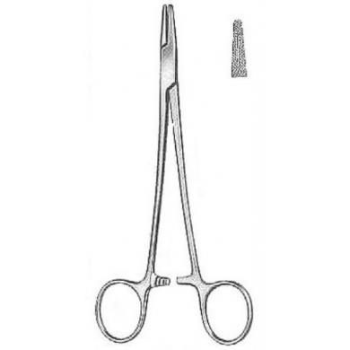
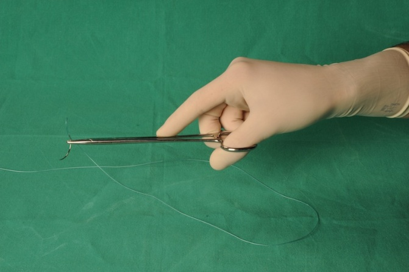

Instrumentarium chirurgiczne
Zanim zabierzesz się za operowanie wypadłoby abyś zdobył nieco informacji na temat narzędzi, którymi będziesz się posługiwał. Będąc na sali operacyjnej musisz używać fachowej terminologii. Dlaczego? Odpowiedź jest bardzo prosta. Otóż dlatego, żeby Twoi współpracownicy czyli asysta czy instrumentariuszka wiedzieli jakiego narzędzia w danej chwili potrzebujesz. To znacznie usprawni pracę Twojego zespołu, a w konsekwencji daje szansę na lepszy efekt lecznicy przeprowadzonego zabiegu. W tym rozdziale postaram się w sposób krótki, ale wystarczający dla studenta medycyny czy początkującego chirurga, przedstawić informacje na temat podstawowego instrumentarium chirurgicznego.
Imadła chirurgiczne
Inaczej zwane igłotrzymaczami. Są to narzędzia służące do trzymania igły chirurgicznej w trakcie szycia. Poza tym są używane do wiązania szwów na narzędziu. W zależności od szytej tkanki imadła mają różną konstrukcję. W praktyce najczęściej można spotkać się z dwoma typami imadeł, a mianowicie: typu Hegara (ryc. 1) lub typu Mathieu (ryc. 2)

Jak używać imadła? Należy je trzymać tak, aby kciuk i palec czwarty znajdowały się w uszkach narzędzia, palec trzeci spoczywał u podstawy uszka przeznaczonego dla palca czwartego, a palec drugi dodatkowo stabilizował ramię imadła. (zdj. 1,2,3) Aby zamknąć zatrzask należy zbliżyć do siebie oba uszka narzędzia. Natomiast żeby otworzyć zatrzask trzeba odepchnięcie uszko przeznaczone dla kciuka ku dołowi.


Narzędzia tnące - skalpel
Podstawowe narzędzie służące do cięcia tkanek. Klasyczny skalpel składa się z trzonka i wymiennych ostrzy. (zdj. 4)

Jak trzymać skalpel? Skalpel układa się wzdłuż dłoni, równolegle do powierzchni tkanki i trzyma pomiędzy kciukiem a palcem trzecim; opuszka palca drugiego leży na jego grzbietowej krawędzi, u podstawy ostrza. Palec czwarty i piąty wspomagają palec trzeci w utrzymaniu trzonka skalpela.( ryc. 3)

Narzędzia tnące - nożyczki
Narzędzie służące do przecinania i preparowania tkanek, a także przecinania szwów chirurgicznych czy obcinania nadmiaru nici. Wyróżniamy nożyczki o prostych lub zagiętych pod różnym kątem ostrzach, przy czym te drugie służą przede wszystkim do preparowania tkanek. (zdj. 5)

Sposób uchwytu nożyczek chirurgicznych (ryc.4)

Narzędzia służące do chwytania tkanek - pincety
W chirurgii spotykamy się najczęściej z dwoma typami pincet: chirurgiczną i anatomiczną. Pinceta chirurgiczna (zdj. 6) posiada ząbki na zakończeniu jednego z ramion, które odpowiadają wcięciom na drugim ramieniu. Służy do przytrzymywania skóry, mięśni i powięzi.

Pinceta anatomiczna (zdj. 7) nie posiada ząbków na końcu, ale nacięcia które zapobiegają miażdżeniu tkanek. Wykorzystywana jest do przytrzymywania delikatnych struktur.

Wielu młodym adeptom chirurgii zdarza się nieprawidłowo trzymać pincetę stosując tzw. „małpi chwyt”. Pincetę trzyma się pomiędzy kciukiem a palcem wskazującym i środkowym co przedstawiono na ryc. 5.